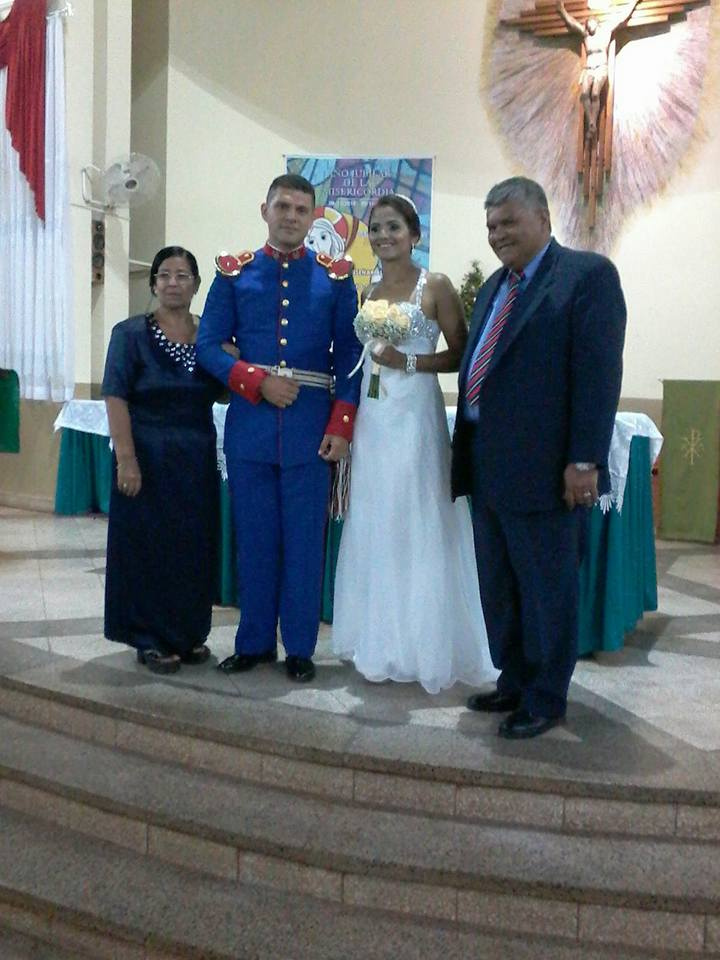

Informacion Personal

Perfil
Primero que nada me presento, mi nombre es Martin, soy Paraguayo, casado con mi amada esposa la Sra Mariela Gonzalez, soy militar y empece a interesarme por la
programacion hace algun tiempo, ya hace poco tiempo me decidi empezar a estudiar en Next U
luego de haberlo hablado con Mariela decidimos que seria bastante bueno que podamos
tenerotra fuente de ingreso a travez de esta profesion, y bueno ahora ya me encuentro terminando el
curso de FUNDAMENTOS DE HTML, espero seguir siendo constante y continuar aprendiendo